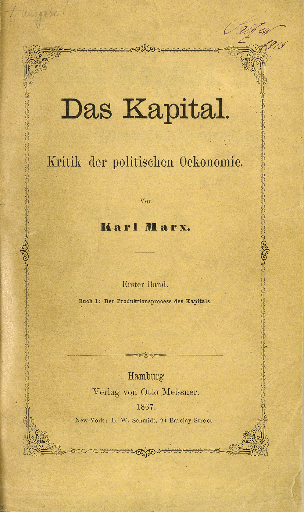

![]()

Introduction
EESE - Approche économique des enjeux environnementaux et stratégie environnementale
Objectifs et notation du cours
Ce cours est un cours d’introduction à l’approche économique des enjeux environnementaux.
Il durera 10h30, et aura pour but de:
- Comprendre les différentes approches économiques de l’environnement et de la pratique des économistes
- Vous familiariser avec les concepts de base de l’économie de l’environnement : externalités, biens publics…
- Comprendre les bases des recommendations de politique économique
- A la fois théoriques
- Et appliquées : marché du carbone, mise en marché des pesticides…
- Aborder l’analyse économique du climat et de la biodiversité
Quelques ressources :
- L’économie de l’environnement, P. Bontemps et G. Rotillon, 2013
- Environmental and Natural Resource Economics, 11th Edition, T.Tietenberg, L. Lewis : pas mal utilisé dans ce cours
- Environmental and Natural Resource Economics: A Contemporary Approach, 5th edition J.M.Harris, B.Roach : pour des sujets environnementaux précis
- A course in Environmental Economics - Theory, Policy and Practice, D.J.Phaneuf & T. Requate : manuel de PhD, plus avancé, si vous voulez approfondir
- Il y aura également des articles suggérés
Par ailleurs, pour poursuivre:
- UC1 Analyse Economique, avec J-C. Bureau, E. Veron, J. Wolfersberger, M. David :
- Analyse du comportement des firmes : monopoles, oligopoles, pouvoir de marché
- Etudes des externalités et financement des biens publics : quelle politique environnementale dans l’incertain?
- Théorie des jeux : exemples canoniques et négociations climatiques
- UC 3 : Economie de l’environnement et des ressources naturelles, avec C. Orset, J. Wolfersberger, M. David, E. Veron
- Approfondissement de ce cours
- Evaluation monétaire de l’environnement
- Economie des ressources renouvelables : la pêche
- UC 6 : Economie ecologique
- Métabolisme social
- Macroéconomie écologique
- Biodiversité, services écosystémiques et compensation
- De la tragédie aux communs
CGEDD
GIEC, 2023
IPBES, 2019
Quelles questions économiques?
Différentes qualités (i.e. différents degré de perturbation par rapport à une situation d’origine) et quantités disponibles
- De l’air
- De l’eau
- Des sols
- Des forêts
- Des populations animales
A différentes échellesspatiales:
- Locales : pollution de l’air parisien
- Régionales : gestion des bassins versants
- Globales : changement climatique
Mais égalementtemporelles :
- Temporaire :
- Dynamique : le changement climatique
Et différentes niveaux decomplexité :
- Mobiles ou locales : déplacement des flux d’azote v. artificialisation des sols
- Prévisibles ou incertaines : prévision climatique v. émergence de zoonose
- Réversibles ou irréversibles : pollution organique v. disparition d’espèces
- Potentiellement non linéaires : effets de seuils etc
- Equitables ou non dans les impacts, à la fois spatiaux et temporels
II. Qu’est-ce que l’économie des enjeux environnementaux?


Différentes définitions
- Dictionnaire de l’académie française :
- “Art d’administrer un patrimoine, une entreprise, afin d’en tirer le meilleur parti”
- “Ensemble des activités humaines et des ressources concourant à la production et à la répartition des richesses”
- Bade and Parkin, 2002 : “L’économie est la science sociale qui étudie les choix que font les individus, les entreprises, les gouvernements et les sociétés entières lorsqu’ils font face à la rareté”1
A. Approche historique des liens entre environnement et nature
1. L’oïkonomia et la chrématistique

Principes de pensée suivant la :
- chrématistique : l’art de l’acquisition des richesses
- l’oikonomia: bien administrer les ressources d’un foyer (oikos, “maison”) en vue du bien-vivre
Que l’on retrouve dans l’histoire de la pensée économique :
Tradition biophysique : Une vision matérialiste des processus économiques comme des flux et des stocks d’énergie et de matière, soumis aux lois de l’entropie et aux sources de subsistance.
Tradition allocative : étudie une relation de cause à effet avec les prix du marché, envisagée en termes de défaillances de marché, d’allocation efficace et d’un concept de l’utilité marginale orienté par la demande, sans lien avec le monde physique
2. Les classiques
L’économie politique comme ::: incremental
- “La branche de la science pour l’homme d’état ou le législateur” expliquant les fortunes relatives des différents pays,
- ainsi que les politiques qui pourraient “enrichir à la fois le peuple et ses souverains” (Enquête sur la Nature et la Cause de la Richesse des Nations, 1776 (p.428, trad)
::::::
- Approche basée sur l’accroissement de la richesse
- La terre est à la source de la valeur dans les théories économiques du XVIIIe siècle, qu’elle soit d’usage ou d’échange
- Le secteur agricole, prédominant à l’époque, est au coeur des préoccupations : les disettes peuvent encore arriver
- Le rapport à la nature de l’économie se fait sous l’angle de la terre, ancrant une tradition biophysique
Dans quelle mesure la terre, ses produits et leur répartition peut être un frein ou moteur à la croissance?
Croissance et limites
L’expansion de la population justifie la mise en culture de plus en plus de terres
Chez Robert Malthus :
- La croissance des rendements agricoles suit au mieux une loi arithmétique
- La croissance de la population, surtout celle des pauvres, est elle géométrique
- Il y aura mathématiquement des famines : il vaut mieux stériliser les pauvres, et ne pas les aider à se reproduire.
Essai sur le principe de population, 1798
Chez David Ricardo:
- Il faut permettre le commerce du grain en Europe après les guerres napoléoniennes
- Afin d’éviter de mettre des terres en culture à coûts trop hauts, de moins en moins rentables
- Pour maintenir les coûts de l’industrie, indexés sur le blé, relativement bas
- Pour avoir de l’expansion
- Si l’on ne le fait pas :
- Les prix des grains vont demeurer très haut
- Et les propriétaires des terres les plus fertiles vont s’accaparer une rente inutile
- A terme, on risque de trouver une sorte d’état stationnaire : pas de croissance économique ni démographique
Principes d’économie politique et de l’impôt, 1817
3. L’approche marxiste (simplifiée)
Karl Marx, Le capital, 1867

- Comme les “classiques”, la valeur vient du travail des gens, vient de l’effort incorporé
- Cela dit, il rejette plusieurs notions :
- Rente/profit: dépend pas de la nature, mais l’existence d’une classe de propriétaire qui exploitent le travail
- Crises de population ne sont pas naturelles, mais viennent des dynamiques d’accumulation
- Relations économiques = relations sociales de production sous un régime particulier, celui du capitalisme, avec 3 grands prismes :
- Le matérialisme : les sociétés sont déterminées non par les idées, mais par leur rapport à la matière, aux conditions dans lesquelles elles produisent leur vie matérielle
- L’histoire : chaque mode de production (l’esclavage, le féodalisme, le capitalisme) possède ses règles, et ses contradictions en son sein, les rendant par nature instable : rien ne sera éternel
- Les relations de classe : dans chaque système, il y a des groupes qui contrôlent la production (les maîtres, les seigneurs, les capitalistes), et d’autres qui travaillent (esclaes, paysans, ouvriers)
- Le travail change la nature en objets, en production, et c’est le seul capable de le faire.
- Les salariés vendent leur force de travail pour un salaire
- Les machines transfèrent le travail en valeur
- La valeur retirée est plus grande par les capitalistes : ils exploitent le travail et retirent une plus-value
- Le capital n’est pas un stock, c’est un processus, où l’argent crée l’argent :
- En achetant des matières première et du travail, on fait produire des marchandises, que l’on revend plus chères
- Le but est l’accumulation de ce capital, de continuer à le faire croître, mieux et plus vite que les autres
- A terme, la sur-accumulation de capital implique qu’il n’y a plus assez de travail pour créer de la valeur
- Menant à de la surcapitalisation, à des crises etc : c’est la 1e contradiction
- A des résistances des individus
- A la destruction de la nature dont il a besoin : c’est la 2e contradiction, de J. O’Connor, 1991)
- Bref, le système crée ainsi les conditions de sa déstabilisation
Une place renouvelée à la nature chez Marx
- Le capitalisme crée des ruptures métaboliques :
- Le cycle des nutriments dans les campagnes est détruit par l’exode rural
- La nature est utilisée comme un “don gratuit” :
- Elle est prise dans le processus de production
- Mais elle ne sont pas payées et sont par conséquent largement dégradées
- Provoquant de facto une instabilité écologique
- L’accumulation primitive, sur lesquelles se sont basés les premiers systèmes d’exploitation (ch. 26-33 - voir critiques)
- Proviendrait d’une lente épargne des vertueux selon les classiques
- Mais selon lui vient plutôt:
- des enclosures : privatisation des communs, les gens sont libres mais sans travail
- des lois contre le vagabondage etc
- de la colonisation et de la traite
- de la privatisation de la terre, changée en actif
4. Le tournant marginaliste
- William Stanley Jevons, The Theory of Political Economy, 1871
- Carl Menger, Principles of Economics, 1871
- Léon Walras, Éléments d’économie politique pure, 1874-77
Les théories passées ne parviennent pas à résoudre le paradoxe de la valeur :
- Problème prix-utilité : certains biens utiles ont un prix très bas, d’autres inutiles un prix très haut (eau v. diamants, chez A. Smith, Livre 1, Ch4)
- Problème travail-prix : des biens incorporant beaucoup de travail ont des prix plus faibles que des perles trouvées
L’approche marginaliste résoud ces problèmes :
- avec un fondement psychologique à la valeur, ans une approche individualiste et comportementale
- où le but n’est plus tant l’accroissement mais l’allocation efficace qui maximise le bien être collectif
- et la matérialité disparaît petit à petit
- Ce n’est pas :
- L’utilité totale qui détermine le prix
- Ni la quantité de travail incorporé
- Mais de l’utilité marginale de la dernière unité disponible:
- La satisfaction apportée par la dernière unité
- Dans un contexte où les unités sont plus ou moins rares
5. L’émergence de l’institutionalisme américain
- Mouvement de pensée américain au tournant du XXe siècle
- Le rôle des institutions sociales est clé
- dans l’explication des phénomènes économiques
- dans la conduite de la politique économique
- La rareté n’est plus qu’un problème technique, mais aussi institutionnel
John Commons (1862-1945)
- L’économie est un ensemble de transactions encadrées par des droits
- Le droit de propriété est un faisceau de droits : distribués entre individus et la société, publics et privés, partiels ou totaux
- Qui “évoluent, […] diffèrent selon les peuples et les époques et elles ont une influence significative sur la production et la répartition des richesses” (The Distribution of Wealth, 1893)
- Les institutions sont des actions collectives qui contrôlent, libèrent et prolongent les actions individuelles” (Institutional Economics, American Economic Review, 1931)
- Dépassant l’individualisme méthodologique
- Plaide pour un capitalisme “raisonnable”, où les intérêts des différents groupes sociaux puissent être représentés de façon démocratique
- Assez contre le laissez-faire ambiant prônant un Etat interventionniste
Conservationnisme v. préservationnisme
- Gifford Pinchot est le premier chef du USFS en 1905, service chapautant l’usage des ressources
- Formé à l’école des forêts de Nancy!!
- “The greatest good for the greatest number in the long run”
- Conservationnisme : courant de pensée visant à l’usage raisonnés des ressources naturelles contre l’usage illimité
- la rareté est une réalité inflexible ; elle peut se révéler comme une disponibilité physique limitée au niveau régional voire mondial, à un instant donné ou dans le temps
- sans une intervention publique suffisante les forces du marché libre intensifieraient la rareté et créeraient de grands monopoles dominant la propriété des ressources naturelles
- Les institutions collectives sont centrales pour orienter l’usage des ressources.
6. L’environnementalisme des années 1960-70 et la naissance de l’économie de l’environnement
- Après une mise à l’agenda dans les 1960 :
- Silent Spring de Rachel Carson qui dénonce l’impact des pesticides sur les oiseaux
- Mouvements contestataires en Europe (1968) et aux Etats Unis
- Retour de la question environnementale dans les années 1970 :
- 1971 : Création du ministère de l’Environnement en France
- 1972 : Conférence des Nations Unies sur l’environnement à Stockholm, premier sommet mondial sur l’environnement
- 1973 : Premier choc pétrolier qui soulève la question de la dépendance aux énergies fossiles
- Travaux du Club de Rome (dont le fameux rapport Meadows)
B. Des approches concurrentes
1. Les grands thèmes qui structurent l’analyse
Des grands thèmes structurent l’analyse économique dans sa diversité :
- La rareté: analyser la distribution et l’allocation de ressources rares
- Efficience : situation où les ressources sont allouées de sorte à maximiser le bien être commun à moindre coût
- Distribution des ressources
- L’incertitude : comprendre les croyances des individus, leurs attermoiements et leurs conséquences
- Risque v. incertitude, F. Knight : on connaît une distribution de probabilité (lotterie) v. on ne sait pas ce qui va se passer
- La domination : les asymétries de pouvoir, notamment économiques, sont au coeur de la dynamique sociale
- Aliénation
- Lutte des classes
- Inégalités de revenus, de genre, “ethnique”
- Le changement : l’évolution est la constante, l’analyse économique doit s’en préoccuper
Avec des échelles différentes d’analyse pertinente :
- L’individu : micro
- Les groupes et institutions : mezzo
- Les systèmes : macro
Et des postulats différents sur les déterminants des comportements:
- Un homo oeconomicus rationnel et maximisateur
- Des comportements dictés par l’imitation grégaire
- Des biais et heuristiques cognitifs
- Des institutions qui conditionnent les interactions
- Des relations de genre, d’ethnie etc
2. Au sein d’approches complémentaires
Exploring Economics
Economie écologique et économie de l’environnement
Economie de l’environnement : émerge de l’école “néoclassique”
- Produit de la fusion de la fusion des théories de la valeur par Alfred Marshall :
- Les coûts de production déterminent l’offre
- L’utilité marginale détermine la demande
- L’économie y est
“the study of manking in the ordinary business of life, examines that part of individual and social action which is most closely connected with the attainment and with the use of material requisites of wellbeing” (Principles of Economics, 1920)
- L’économie de l’environnement s’établit dans les années 1960-70, avec la fondation du Journal of Environmental Economics and Management
- Son but : analyser l’environnement comme un bien, l’allouer efficacement - qu’est-ce que ça veut dire?
- Comment expliquer la présence de trop de pollutions, trop d’exploitations d’espèces?
- Comment agir pour empêcher cette surprésence, quels outils mettre en place?
- Les dommages évités par les régulations sont-ils supérieurs aux coûts?
[Emerge également une branche appelée économie écologique - voir UC 6]
- Avec des différences notables sur les méthodes, notamment l’usage de l’évaluation monétaire
- Qui se préoccupe de soutenabilité globale
- Et refuse l’idée d’une solution technophile

Harris & Roach, p. 13
II. Méthodologie de l’économie de l’environnement
En tant que discipline, l’économie de l’environnement (et plus largement l’économie) se fixe deux postures
- Positive
- Décrire correctement ce qui est
- Et tester la théorie
- Normative
- Enoncer un jugement sur une situation
- Dire ce qui devrait être, sans pouvoir autant le tester
Et deux grandes méthodes :
- La modélisation et le calcul
- Pour comprendre les mécanismes de l’action et anticiper des effets : la microéconomie basée sur l’individualisme méthodologique
- Pour juger de l’opportunité d’une action : les critères de décision publique
- Les statistiques appliquées à l’économie : l’économétrie
- Pour calibrer les mécanismes et anticiper des effets
- Pour évaluer les coûts, dommages, bénéfices des actions afin de décider
III. Pourquoi protéger l’environnement?
A. Quelles valeurs lui sont associées?
1. Typologie des valeurs
John Krutilla, dans Conservation Reconsidered, 1967, identifie plusieurs valeurs associées, formant la valeur économique totale :
- La valeur d’usage qui peut être:
- Directe: les valeurs associées à la consommation directe de ressources issues de l’environnement (poisson, bois etc), c’est à dire aux services écosystémiques de provision ou de contributions de la nature aux populations matérielles
- Indirecte: les valeurs associées au fonctionnement des écosystèmes, qui donnent des services écosystémiques de régulation, comme la séquestration du carbone, ou le filtrage de l’eau, ou de contributions de la nature aux populations de régulation
- d’option: la possiblité d’utiliser dans le futur à la fois pour la préservation et l’exploitation économiques des écosystèmes jusque là préservés, ou non utilisés
- La valeur de non usage :
- de legs : la valeur associée à la possibilité pour les générations futures de bénéficier de la nature, au travers de contributions de la nature aux populations matérielles et immatérielles
- d’altruisme : la valeur qui correspond à la volonté de préserver l’environnement au sein d’une même génération
- d’existence : la valeur correspondant à la protection de l’environnement pour un motif intrinsèque, délié des considérations anthropocentriques
Biens marchands, non marchands, prix et valeurs
Les biens et services peuvent être marchands :
- destinés normalement à être vendus sur le marché à un prix calculé pour couvrir leur coût de production. Sont marchands tous les biens et services produits par les branches d’activité marchande INSEE
- Ils ont donc un prix i.e. :
- une valeur monétaire échangée contre un bien ou un service
- Résultant souvent de la confrontation entre offre et demande
ounon-marchands
- production […] livrée gratuitement ou à des prix économiquement non significatifs INSEE
- Ils n’ont pas directement de prix observé, mais une valeur :
- Elle peut venir de différents fondements : travail (Marx, Ricardo etc) ou alors valeur subjective
- On dira ici que la valeur est le changement de bien-être lié à la consommation d’une unité de bien ou de service
2. Peut on les mesurer?
Défis moraux :
- Suppose une substituabilité entre nature et argent
- On met une valeur sur la nature qui aura un impact pour les générations futures, qui n’ont pas de voix
- Risque de favoriser une compensation plutôt qu’une préservation
Défis techniques :
- On n’observe pas la plupart des valeurs sur un marché, on n’a pas de données de prix
- Il est difficile de séparer les éléments : séparer les services du sol de ceux des arbres etc
On a plusieurs types de méthodes
- Les préférences révélées : à partir de données observées, on en déduit la valeur de l’environnement
- Les préférences déclarées : à partir de données de sondage, on en déduit la valeur de l’environnement
Exemple : quelle est la valeur d’une forêt?
Plusieurs approches possibles :
Méthode du coût du voyage: les dépenses que font les gens pour aller voir un site naturel reflètent la valeur: ::: incremental
- On observe la fréquentation d’un site selon la distance et donc le coût de déplacement
- Si plus on s’éloigne moins les viennent, on peut reconstruire une courbe de demande
- Et en déduire le surplus du consommateur, notion sur laquelle on reviendra
- Critiques:
- Hypothèses fortes: on ne fait pas un road trip, on va seulement voir la nature
- La valeur du temps est un choix fort
- Les pauvres mettent moins de valeurs, car ils sont plus contraints
- On n’a pas les valeurs d’option ni d’existence
:::
Méthode d’évaluation contingente: on demande aux gens combien ils seraient prêts à payer pour sauvegarder la forêt
- “Seriez-vous prêts à payer X € par an, via un impôt spécial, pour financer la protection de la forêt ? »
- Permet de mesurer plein de valeurs
- Critiques:
- Biais dans les réponses : on dira parfois “Oui, prêt à payer 1 million par an”
- Limite des pauvres : leur consentement à payer est ex-post limité par le revenu
- Plein d’autres biais.
A parte : l’économétrie moderne dépasse la valorisation
En pratique, l’économie de l’environnement a dépassé la simple évaluation monétaire pour d’autres questions d’impact, suivant la révolution de la crédibilité :
- Quel est l’effet du changement climatique sur la mortalité?
- La protection des forêts est-elle efficace contre la déforestation?
- Le remembrement agricole est-il le seul responsable de l’arrachage des haies?
- Les politiques de subvention changent-elles vraiment les comportements énergétiques?
Différentes méthodes modernes dites “quasi expérimentales” :
- Méthode des différences de différence :
- On regarde l’évolution temporelle d’un groupe de contrôle
- Et celle d’un groupe traité
- On fait la différence
Différentes méthodes modernes, dites “quasi-expérimentales” :
- Méthode des discontinuités :
- On veut examiner des individus différents répartis autour d’un seuil fixé : seuil de pollution, côté d’une frontière etc
- On compare ceux qui sont juste en dessous du seuil à ceux qui sont juste au dessus : il n’y a pas de vraie différence entre les deux
B. Comment décider?
Méthode “analyse coûts bénéfices” : doit on prendre une décision sur des outcomes prédéfinis?
- Si les coûts sont supérieurs aux bénéfices, on dit qu’il faut entreprendre une action
- Sinon, on ne le fait pas
Cela suppose vient avec de nombreux problèmes :
- Il faut réussir à monétiser, aujourd’hui et pour les effets futurs!
- On ne prend pas en compte la distribution des coûts et des bénéfices
- Aujourd’hui
- Et demain
D’autres méthodes sont possibles :
- On cherche les actions qui maximisent le bénéfice-net aggrégé: combien doit on faire?
- On cherche l’efficience allocative : \(Bn = B - C \Rightarrow B' = C'\)
- C’est le premier principe d’équimarginalité
- On cherche l’endroit où le coût marginal social et le bénéfice marginal social sont égaux
- Oublie la distribution
- On cherche lesactions qui sont le plus coût efficace: comment faire le moins cher?
- Celles qui permettent d’aboutir à un but, fixé par les experts ou la science, pour le moins cher
- Evite la monétisation de tout
- Ex : option 1 évite 1t GHG / 1000 €, option 2 évite 2t GHG / 1000€
- Si on doit éviter 10t GHG :
- On peut utiliser les deux technologies : \(5\times 1000 + 2.5 \times 1000 = 7500\)
- Ou utiliser la moins chères : \(5 \times 1000 = 5000\)
- Le but est achevé à moindre coût : 2e principe d’équimarginalité
- Avec des coûts marginaux constants, on n’utilise qu’une seule firme
- Avec des coûts marginaux variables, on utilise les solutions jusqu’à ce que leurs coûts marginaux soit égaux
- Garantit pas l’efficacité, car la cible est fixée d’emblée
Conclusion
- L’économie se définit de façons multiples :
- L’analyse des causes de la richesse nationale et de leur accroissement
- L’analyse des processus matériels historiques et de la domination qui s’ensuit
- La science des choix dans un contexte de rareté
- L’économie de l’environnement se base sur :
- Une valeur psychologique et matérielle
- Cherche à analyser les allocations optimales de biens environnementaux
- En assignant des valeurs commensurables de l’environnement au reste
- En utilisant des méthodes de modélisation des choix
- Et d’analyse statistique
- Principes d’équimarginalité
Annexes
Critiques de l’accumulation primitive
Pas un moment unique → processus récurrent d’expropriation (privatisations, dettes, crises) : accumulation par dépossession.
Harvey 2003; 2005.Poids des colonies remis en cause (Bairoch) → la richesse des métropoles n’est pas principalement coloniale; au XIXᵉ, croissance souvent corrélée au protectionnisme.
Bairoch 1993; 1997.Profits de l’esclavage/Atlantique : contribution “limitée” (débat) → chiffrages prudents sur l’industrialisation britannique.
Engerman 1972; O’Brien 1982.Origines “internes” agraires → rapports de classe ruraux anglais > simple essor commercial/colonial.
Brenner 1976; Wood 2002.Angle mort genre/reproduction → violences de genre et travail reproductif non payé au cœur de la transition.
Federici 2004; Mies 1986.Nature/société → dépasser le dualisme ; appropriation récurrente de “natures bon marché” (sols, énergie, travail non payé).
Moore 2015.
Références (sélection, pour aller vite)
- Bairoch, P. Economics and World History: Myths and Paradoxes (1993); Victoire et déboires (1997).
- Brenner, R. “Agrarian Class Structure and Economic Development…” (Past & Present, 1976).
- Engerman, S. “The Slave Trade and British Capital Formation…” (1968/1972).
- Harvey, D. The New Imperialism (2003); A Brief History of Neoliberalism (2005).
- Mies, M. Patriarchy and Accumulation on a World Scale (1986).
- Moore, J. W. Capitalism in the Web of Life (2015).
- O’Brien, P. (1982) travaux sur la contribution périphérique / commerce atlantique.
- Wood, E. M. The Origin of Capitalism (2002).
- Federici, S. Caliban and the Witch (2004).